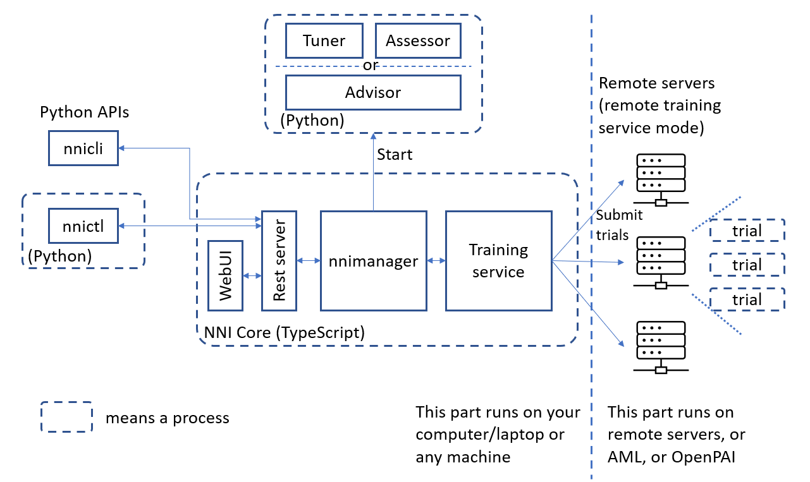

Introduction¶
NNI(Neural Network Intelligence)是一个能帮助用户自动进行特征工程， 神经网络架构搜索，超参调优及模型压缩的工具包。
官网：https://nni.readthedocs.io/zh/stable/index.html
体系结构¶
Experiment : 表示一次用于寻找模型最佳超参组合或神经网络架构的任务
搜索空间：模型的调优范围
Configuration：来自搜索空间的实例，每个超参由特定的值
Trial：使用某组配置的一次独立尝试
Tuner：一个AntoML算法，会生成新的配置给下一次trial
Assessor：分析Trail的中间结果，来确定Trial是否该提前终止
训练平台：Trial的执行环境，根据Experiment的配置，可以是本机，远程服务器组或其他大规模训练平台(如 OpenPAI，Kubernetes)
Experiment 过程：Tuner接收搜索空间并生成配置提交到训练平台，执行的性能结果返回给Tuner，再生成新的配置。
安装¶
pip 安装 python3 -m pip install --upgrade nni
install in docker 1 docker pull msranni/nni:latest
验证安装
git clone -b v1.9 https://github.com/Microsoft/nni.gitnnictl create --config nni/examples/trials/mnist-tfv1/config.yml如何实现NNI的Trial¶
通过NNI API
准备搜索空间参数.json文件
在模型代码中加入NNI相关API
定义一个.yml文件使能NNI API
通过NNI Annotation
另一种方式是通过NNI的python的语法来实现
内置训练平台¶
NNI 提供的训练平台包括本机，远程计算机，以及集群的OpenPAI，Kubeflow等。
kubeflow
NNI支持在Kubeflow上运行，需要一台配置好kubeconfig的Ubuntu计算机连接到此Kubernetes集群。 在Kubeflow模式下，每个Trial程序会在集群中作为一个Kubeflow作业来运行